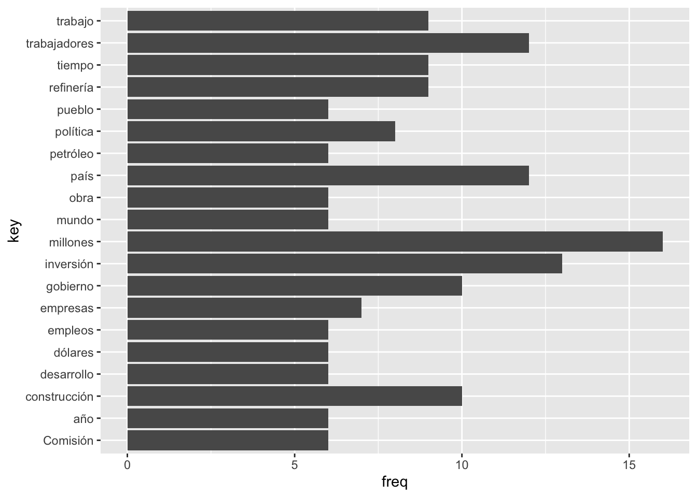
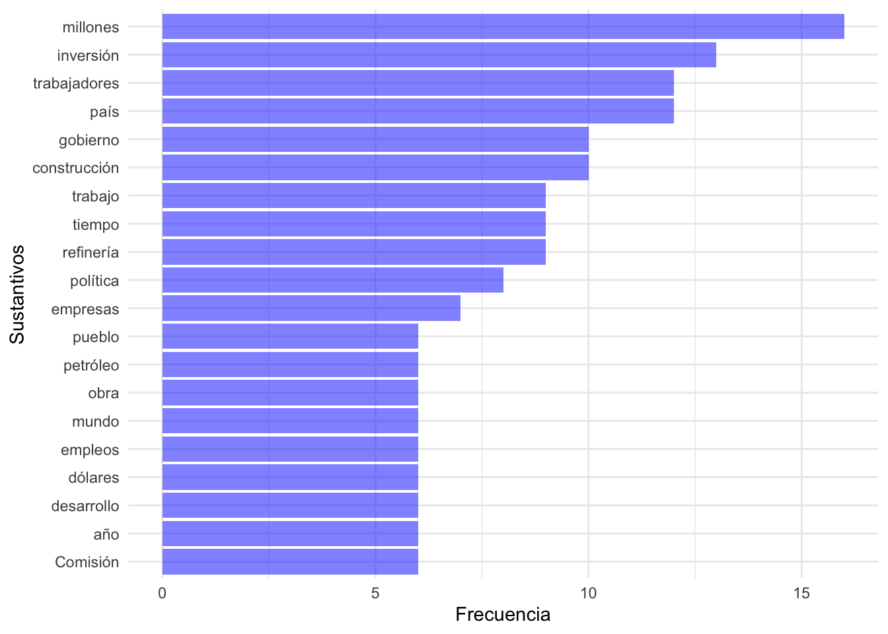
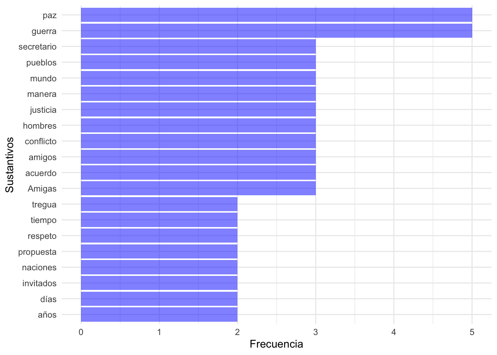
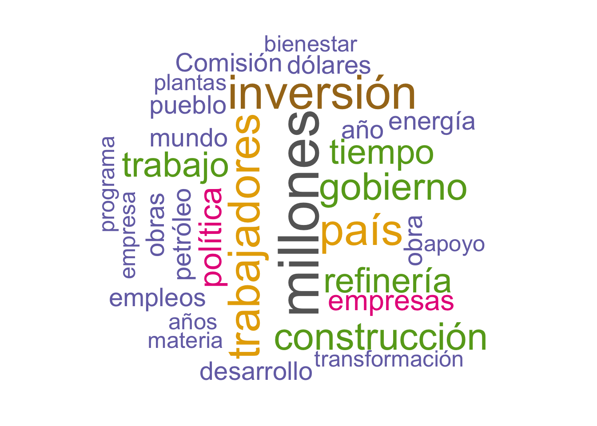
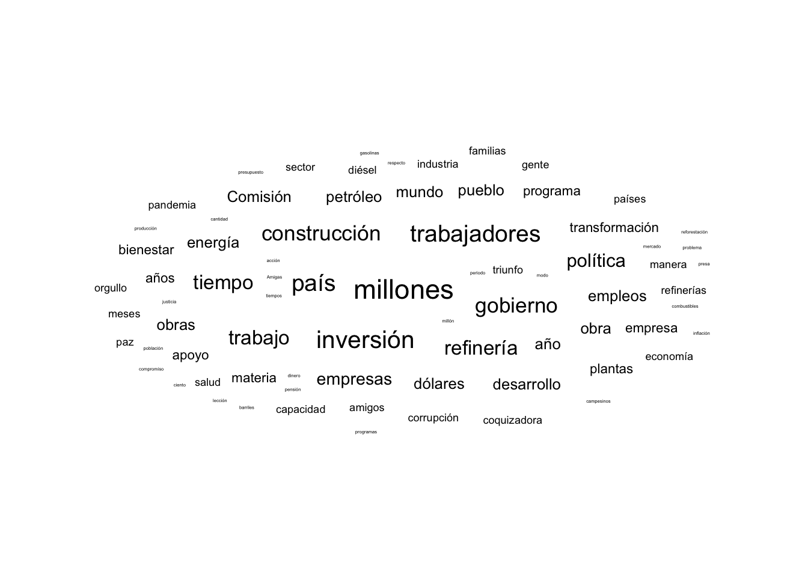
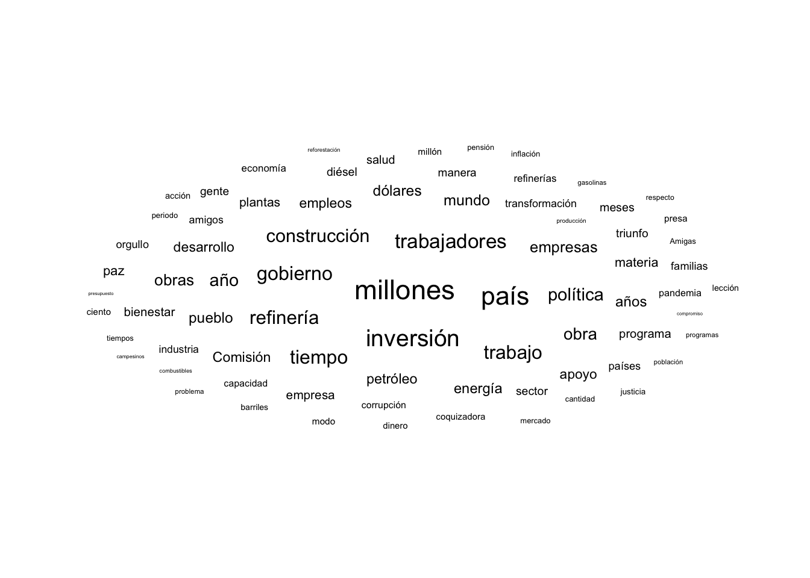

En la práctica pasada iniciamos con algunos análisis de cuáles eran las palabras más repetidas. Estos análisis tradicionalmente se hacen con nubes de palabras o gráficos. Vamos a seguir trabajando específicamente con los datos del discurso de AMLO del 1 de julio de 2022, pero vamos a agregar otro discurso, para comparar
udmodel <-udpipe_download_model(language ="spanish") # esto trabaja con la estructura del español
Downloading udpipe model from https://raw.githubusercontent.com/jwijffels/udpipe.models.ud.2.5/master/inst/udpipe-ud-2.5-191206/spanish-gsd-ud-2.5-191206.udpipe to /Users/anaescoto/Dropbox/2022/Curso_r_cnvl/coneval/spanish-gsd-ud-2.5-191206.udpipe
- This model has been trained on version 2.5 of data from https://universaldependencies.org
- The model is distributed under the CC-BY-SA-NC license: https://creativecommons.org/licenses/by-nc-sa/4.0
- Visit https://github.com/jwijffels/udpipe.models.ud.2.5 for model license details.
- For a list of all models and their licenses (most models you can download with this package have either a CC-BY-SA or a CC-BY-SA-NC license) read the documentation at ?udpipe_download_model. For building your own models: visit the documentation by typing vignette('udpipe-train', package = 'udpipe')
Downloading finished, model stored at '/Users/anaescoto/Dropbox/2022/Curso_r_cnvl/coneval/spanish-gsd-ud-2.5-191206.udpipe'
amlo1_udpipe<-udpipe(x =amlo1, object=udmodel) #"tokeniza" el textoamlo2_udpipe<-udpipe(x =amlo2, object=udmodel) #"tokeniza" el texto
16.3 Estadísticas de las palabras
Tenemos que una función en {udpipe} que se llama txt_freq(), es como un tabulado, pero nos da la frecuencia ordenada de mayor a m enor y los porcentajes relativos
amlo1_udpipe %>%filter(upos=="NOUN") %>%# nos vamos a quedar ahorita solo con los nombreswith(txt_freq(token) # ojo hay que poner el with, porque no es formato tidy el comando ) %>%head(10) # elegir número
key freq freq_pct
1 millones 16 1.7997750
2 inversión 13 1.4623172
3 país 12 1.3498313
4 trabajadores 12 1.3498313
5 gobierno 10 1.1248594
6 construcción 10 1.1248594
7 refinería 9 1.0123735
8 tiempo 9 1.0123735
9 trabajo 9 1.0123735
10 política 8 0.8998875
Utilizando {ggplot2}, una vez que tenemos esta tabla, podemos hacer una gráfica
amlo1_udpipe %>%filter(upos=="NOUN") %>%# nos vamos a quedar ahorita solo con los nombreswith(txt_freq(token) # ojo hay que poner el with, porque no es formato tidy el comando ) %>%head(20) %>%# me voy a quedar con las primeras 20 palabrasggplot()+aes(x=key, y=freq) +geom_bar(stat ="identity") +coord_flip()

Pero no está ordenado ….
amlo1_udpipe %>%filter(upos=="NOUN") %>%# nos vamos a quedar ahorita solo con los nombreswith(txt_freq(token) # ojo hay que poner el with, porque no es formato tidy el comando ) %>%head(20) %>%# me voy a quedar con las primeras 20 palabrasmutate(key = forcats::fct_reorder(key, freq)) %>%# aquí ordeno de acuerdo a las frecuenciasggplot() +# aquí ya empieza el gráficoaes(x=key, y=freq) +geom_bar(stat ="identity", fill="blue", alpha=I(0.5)) +coord_flip() +theme_minimal() +labs(x="Sustantivos", y="Frecuencia")

Hagamos lo mismo para el segundo discurso:
amlo2_udpipe %>%filter(upos=="NOUN") %>%# nos vamos a quedar ahorita solo con los nombreswith(txt_freq(token) # ojo hay que poner el with, porque no es formato tidy el comando ) %>%head(20) %>%# me voy a quedar con las primeras 20 palabrasmutate(key = forcats::fct_reorder(key, freq)) %>%# aquí ordeno de acuerdo a las frecuenciasggplot() +# aquí ya empieza el gráficoaes(x=key, y=freq) +geom_bar(stat ="identity", fill="blue", alpha=I(0.5)) +coord_flip() +theme_minimal() +labs(x="Sustantivos", y="Frecuencia")

Sin haber leido o escuchado los discursos, sabemos que son dos discursos bastante diferentes.
16.4 Comparando tokens, palabras y más
Podemos revisar qué tanto se pueden comparar estos textos utilizando {udpipe}
Esta función nos da todas las palabras(o lemmas) comunes a ambos textos.
Seguiremos analizando más de la comparación de textos en la próxima práctica ;)
16.5 Nubes de palabras
Otra forma muy común para presentar cuántas palabras hay y su frecuencia son las nubes de palabras
Lo primero es que quizas sea más fácil tener un objeto con los conteos de palabras que encontramos usando txt_frq
df_nube<-amlo1_udpipe %>%filter(upos=="NOUN") %>%# nos vamos a quedar ahorita solo con los nombreswith(txt_freq(token) # ojo hay que poner el with, porque no es formato tidy el comando )
O si queremos usar todas las palabras independientemente de su función, podemos utilizar las palabras stop:
df_nube2<-amlo1_df %>%unnest_tokens(word,text) %>%filter(!word%in%stop) %>%# ojo con el filtrotabyl(word) df_nube2 %>%head(10)
set.seed(1234) # ojo es importante para que se vea siempre igual. Pero no es grave si no se ponewordcloud::wordcloud(words =df_nube$key, # columna donde se listan las palabrasfreq = df_nube$freq, # columna donde están las frecuenciasmin.freq =5, # valor mínimo para incluirlamax.words=200, #Máximo de palabrasrandom.order=FALSE, #plot words in random order. If false, they will be plotted in decreasing frequencyrot.per=0.35, # proportion words with 90 degree rotationcolors=brewer.pal(8, "Dark2") # paleta de colores, aquí usamos uno de RColorBrewer )

16.5.2 Nube con {ggwordcloud}
Ya conocemos bastante el formato tidy, y sabemos de las ventajas de que nuestros gráficos sean ggplot
Aquí las estéticas que tenemos son “label” = columna donde están están las palabraas
df_palabras %>%
ggplot(
aes(label= variable donde están las palabras,
size = variable donde está la frecuencia))+
geom_text_wordcloud # la geometría especial.
df_nube %>%filter(freq>2) %>%# hacemos un filtro porque muchas no se ven bienggplot()+aes(label=key,size=freq) +geom_text_wordcloud() +theme_minimal()

df_nube %>%filter(freq>2) %>%# hacemos un filtro porque muchas no se ven bienggplot()+aes(label=key,size=freq) +geom_text_wordcloud_area() +theme_minimal()

Se ve igual… dice la ayuda
geom_text_wordcloud_area is an alias with a different set of default, that chooses a font size so that the area of the text is now related to the size aesthetic.
No se ve tan divertida….
Una de las cosas que hacía bonita a nuestra primera nube era el elemento aleatorio. Para ello vamos a necesitar saber cuántas filas tenemos
df_nube %>%filter(freq>2) %>%dim()
[1] 76 3
set.seed(1234)df_nube %>%filter(freq>2) %>%# hacemos un filtro porque muchas no se ven bienggplot() +aes(label =key, size = freq,color =factor(sample.int(10, 76, replace =TRUE)) # elegirá 10 colores aleatorios entre las 76 palabras ) +geom_text_wordcloud_area() +scale_size_area(max_size =8) +theme_minimal()